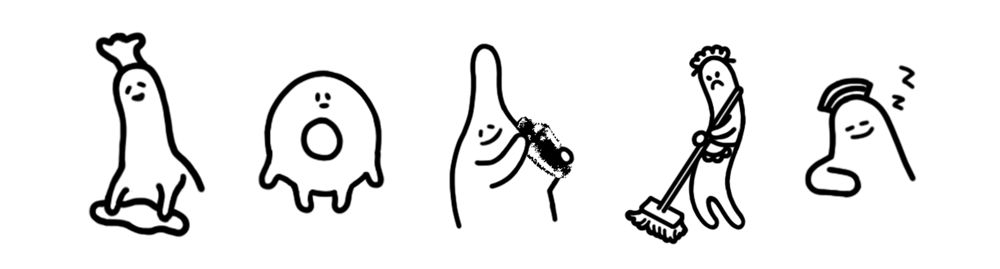
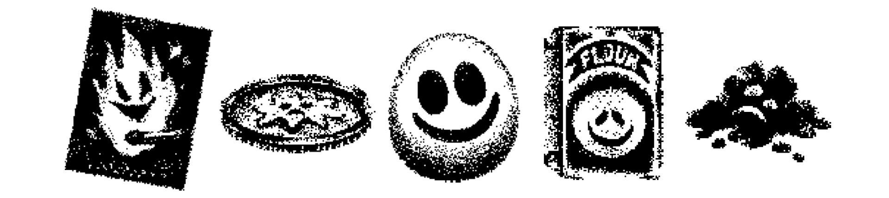
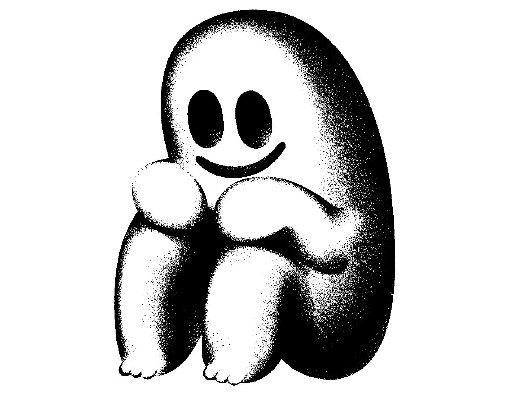
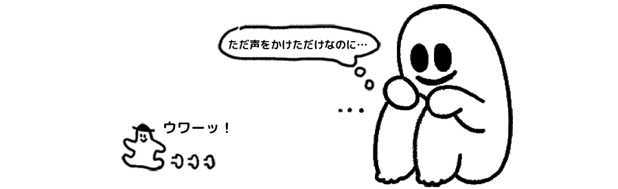
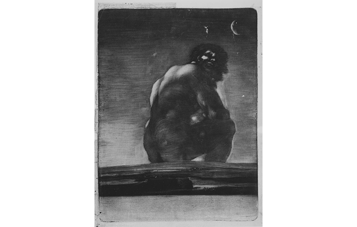

TOTT
※今回の記事は、『ホテル・ソウルズ』のネタバレがあるので注意して読んでください。
第1回でも述べたように、『ホテル・ソウルズ』を作って私が最も楽しかった瞬間はやはりキャラクターを描く時でした。
奇妙なホテルの従業員は全員、明確な性別も形もなく、幽霊のようにホテルの中にいます。
奇妙なこだわりを持って変なことを言って、普通のホテルの従業員とは違った印象を与えることも。
人間よりもっとあいまいな塊みたいなホテルスタッフを描くのが最も楽しかったです。


ホテルの中の生死の境界はあいまいで、それに沿うようにして、いくつかのオブジェクトにも人物のような表情があったりします。これも描くのが楽しかったです。

この『ホテル・ソウルズ』の奇妙なキャラクターの中で最も象徴的なキャラクターが、「それ」です。
「それ」は、ホテルの地下深くに座っている巨大な何か。最後まで正体が十分に説明されていない存在ですね。
ホテルのスタッフは「それ」が好きで、崇拝しています。彼らも同様に、「それ」が何なのか正確にはわかっていません。
主人公も、初めて出会った巨大な「それ」を見て、「それ」が何なのかを理解しようとすることもなく、怖がって逃げます。個人的に、この一連のシーンがとても好きです。
このゲームのハイライトであり、「それ」が挨拶してくれたのをわかってない主人公の反応がおもしろいでしょ？

しかし、主人公が「それ」の体の中に進入した後には、「それ」の感じている気持ちの一部を読むことができます。そして、「それ」も同様に、地球という見知らぬ空間に孤立して恐怖と孤独を感じる、ある意味では悲しくかわいそうな存在だとわかります。
余談ですが、私は「それ」を描きながら、ゴヤの『巨人』のことを考えていました。

"地球の端に座る神秘的な巨人を描いたこの珍しい版画は、ゴヤの作品のうちでも最も記憶に残る異様な作品のひとつです。
痩せこけた三日月だけに照らされる夜を肩越しに見上げるこの孤独な怪人は、哀れみと不安の両面を感じさせます。" - MetMuseum
同様に、『ホテル・ソウルズ』のキャラクターからも、正体がわからないことから来る恐怖を感じると同時に、実際には、誰もが運命からは自由になれない存在だと、
憐憫の情を覚えるのではないかと思います。 『ホテル・ソウルズ』をプレイしてくださった多くの方々が、そう感じてくださることを願います。
第3回では、『ホテル・ソウルズ』のゲーム開発プロセスと、感じたことについて書いてみようかと思います。